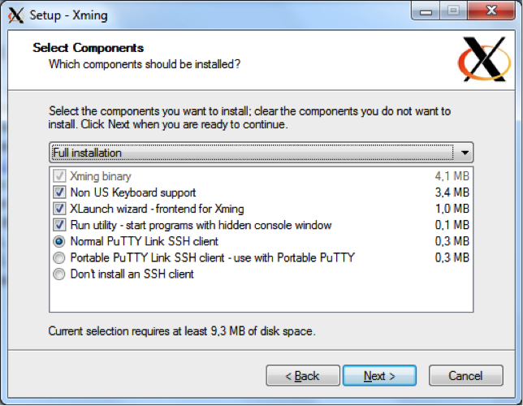
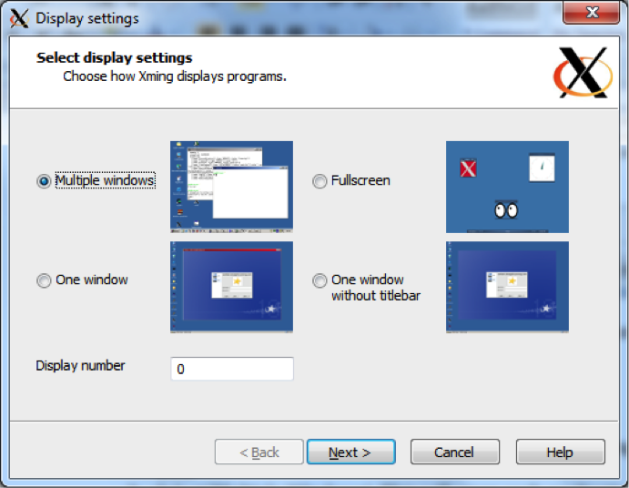
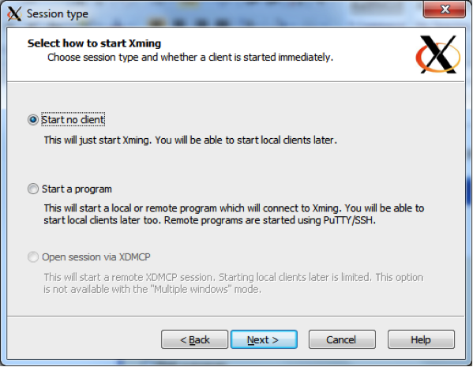
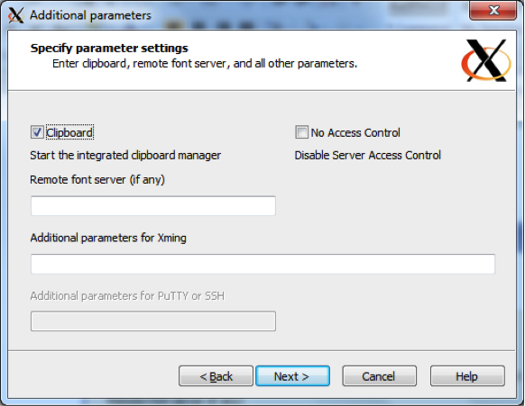
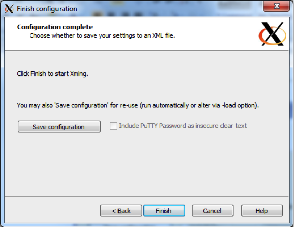
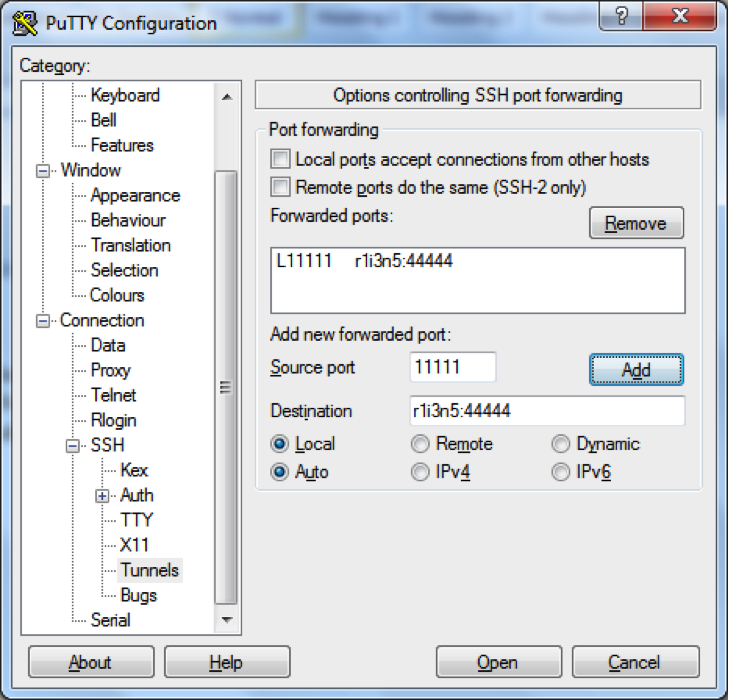
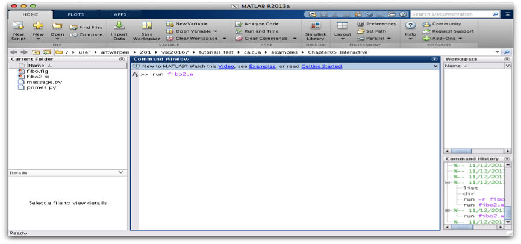
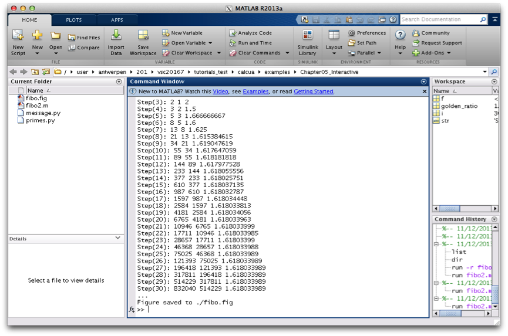
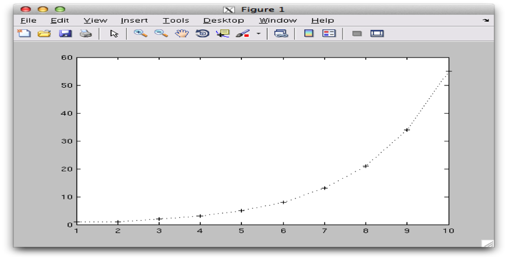

Running interactive jobs#
Introduction#
Interactive jobs are jobs which give you an interactive session on one of the compute nodes. Importantly, accessing the compute nodes this way means that the job control system guarantees the resources that you have asked for.
Interactive PBS jobs are similar to non-interactive PBS jobs in that they are submitted to PBS via the command qsub. Where an interactive job differs is that it does not require a job script, the required PBS directives can be specified on the command line.
Interactive jobs can be useful to debug certain job scripts or programs, but should not be the main use of the UAntwerpen-HPC. Waiting for user input takes a very long time in the life of a CPU and does not make efficient usage of the computing resources.
The syntax for qsub for submitting an interactive PBS job is:
$ qsub -I <... pbs directives ...>
Interactive jobs, without X support#
Tip
Find the code in "~/examples/Running_interactive_jobs"
First of all, in order to know on which computer you're working, enter:
$ hostname -f
ln2.leibniz.uantwerpen.vsc
This means that you're now working on the login node ln2.leibniz.uantwerpen.vsc of the cluster.
The most basic way to start an interactive job is the following:
$ qsub -I
qsub: waiting for job 433253.leibniz to start
qsub: job 433253.leibniz ready
There are two things of note here.
-
The "qsub" command (with the interactive -I flag) waits until a node is assigned to your interactive session, connects to the compute node and shows you the terminal prompt on that node.
-
You'll see that your directory structure of your home directory has remained the same. Your home directory is actually located on a shared storage system. This means that the exact same directory is available on all login nodes and all compute nodes on all clusters.
In order to know on which compute-node you're working, enter again:
$ hostname -f
r1c02cn3.leibniz.antwerpen.vsc
Note that we are now working on the compute-node called "r1c02cn3.leibniz.antwerpen.vsc". This is the compute node, which was assigned to us by the scheduler after issuing the "qsub -I" command.
This computer name looks strange, but bears some logic in it. It provides the system administrators with information where to find the computer in the computer room.
The computer "r1c02cn3" stands for:
-
"r5" is rack #5.
-
"c3" is enclosure/chassis #3.
-
"cn08" is compute node #08.
With this naming convention, the system administrator can easily find the physical computers when they need to execute some maintenance activities.
Now, go to the directory of our second interactive example and run the program "primes.py". This program will ask you for an upper limit ($> 1$) and will print all the primes between 1 and your upper limit:
$ cd ~/examples/Running_interactive_jobs
$ ./primes.py
This program calculates all primes between 1 and your upper limit.
Enter your upper limit (>1): 50
Start Time: 2013-09-11 15:49:06
[Prime#1] = 1
[Prime#2] = 2
[Prime#3] = 3
[Prime#4] = 5
[Prime#5] = 7
[Prime#6] = 11
[Prime#7] = 13
[Prime#8] = 17
[Prime#9] = 19
[Prime#10] = 23
[Prime#11] = 29
[Prime#12] = 31
[Prime#13] = 37
[Prime#14] = 41
[Prime#15] = 43
[Prime#16] = 47
End Time: 2013-09-11 15:49:06
Duration: 0 seconds.
You can exit the interactive session with:
$ exit
Note that you can now use this allocated node for 1 hour. After this hour you will be automatically disconnected. You can change this "usage time" by explicitly specifying a "walltime", i.e., the time that you want to work on this node. (Think of walltime as the time elapsed when watching the clock on the wall.)
You can work for 3 hours by:
$ qsub -I -l walltime=03:00:00
If the walltime of the job is exceeded, the (interactive) job will be killed and your connection to the compute node will be closed. So do make sure to provide adequate walltime and that you save your data before your (wall)time is up (exceeded)! When you do not specify a walltime, you get a default walltime of 1 hour.
Interactive jobs, with graphical support#
Software Installation#
To display graphical applications from a Linux computer (such as the VSC clusters) on your machine, you need to install an X Window server on your local computer.
The X Window system (commonly known as X11, based on its current major version being 11, or shortened to simply X) is the system-level software infrastructure for the windowing GUI on Linux, BSD and other UNIX-like operating systems. It was designed to handle both local displays, as well as displays sent across a network. More formally, it is a computer software system and network protocol that provides a basis for graphical user interfaces (GUIs) and rich input device capability for networked computers.
Install Xming#
The first task is to install the Xming software.
-
Download the Xming installer from the following address: http://www.straightrunning.com/XmingNotes/. Either download Xming from the Public Domain Releases (free) or from the Website Releases (after a donation) on the website.
-
Run the Xming setup program on your Windows desktop.
-
Keep the proposed default folders for the Xming installation.
-
When selecting the components that need to be installed, make sure to select "XLaunch wizard" and "Normal PuTTY Link SSH client".
 -
We suggest to create a Desktop icon for Xming and XLaunch.
-
And Install.
And now we can run Xming:
-
Select XLaunch from the Start Menu or by double-clicking the Desktop icon.
-
Select Multiple Windows. This will open each application in a separate window.
 -
Select Start no client to make XLaunch wait for other programs (such as PuTTY).
 -
Select Clipboard to share the clipboard.
 -
Finally Save configuration into a file. You can keep the default filename and save it in your Xming installation directory.
 -
Now Xming is running in the background ... and you can launch a graphical application in your PuTTY terminal.
-
Open a PuTTY terminal and connect to the HPC.
-
In order to test the X-server, run "xclock". "xclock" is the standard GUI clock for the X Window System.
$ xclock
You should see the XWindow clock application appearing on your Windows machine. The "xclock" application runs on the login-node of the UAntwerpen-HPC, but is displayed on your Windows machine.
You can close your clock and connect further to a compute node with again your X-forwarding enabled:
$ qsub -I -X
qsub: waiting for job 433253.leibniz to start
qsub: job 433253.leibniz ready
$ hostname -f
r1c02cn3.leibniz.antwerpen.vsc
$ xclock
and you should see your clock again.
SSH Tunnel#
In order to work in client/server mode, it is often required to establish an SSH tunnel between your Windows desktop machine and the compute node your job is running on. PuTTY must have been installed on your computer, and you should be able to connect via SSH to the HPC cluster's login node.
Because of one or more firewalls between your desktop and the HPC clusters, it is generally impossible to communicate directly with a process on the cluster from your desktop except when the network managers have given you explicit permission (which for security reasons is not often done). One way to work around this limitation is SSH tunnelling.
There are several cases where this is useful:
-
Running graphical applications on the cluster: The graphical program cannot directly communicate with the X Window server on your local system. In this case, the tunnelling is easy to set up as PuTTY will do it for you if you select the right options on the X11 settings page as explained on the page about text-mode access using PuTTY.
-
Running a server application on the cluster that a client on the desktop connects to. One example of this scenario is ParaView in remote visualisation mode, with the interactive client on the desktop and the data processing and image rendering on the cluster. This scenario is explained on this page.
-
Running clients on the cluster and a server on your desktop. In this case, the source port is a port on the cluster and the destination port is on the desktop.
Procedure: A tunnel from a local client to a specific computer node on the cluster
-
Log in on the login node via PuTTY.
-
Start the server job, note the compute node's name the job is running on (e.g., r1c02cn3.leibniz.antwerpen.vsc), as well as the port the server is listening on (e.g., "54321").
-
Set up the tunnel:
-
Close your current PuTTY session.
-
In the "Category" pane, expand Connection>SSh, and select as show below:
 -
In the Source port field, enter the local port to use (e.g., 5555).
-
In the Destination field, enter
: (e.g., r1c02cn3.leibniz.antwerpen.vsc:54321 as in the example above, these are the details you noted in the second step). -
Click the Add button.
-
Click the Open button
-
The tunnel is now ready to use.
Run simple example#
We have developed a little interactive program that shows the communication in 2 directions. It will send information to your local screen, but also asks you to click a button.
Now run the message program:
$ cd ~/examples/Running_interactive_jobs
./message.py
You should see the following message appearing.

Click any button and see what happens.
-----------------------
< Enjoy the day! Mooh >
-----------------------
^__^
(oo)\_______
(__)\ )\/\
||----w |
|| ||
Run your interactive application#
In this last example, we will show you that you can just work on this compute node, just as if you were working locally on your desktop. We will run the Fibonacci example of the previous chapter again, but now in full interactive mode in MATLAB.
::: prompt :::
And start the MATLAB interactive environment:
::: prompt :::
And start the fibo2.m program in the command window:
::: prompt fx >> :::
::: center  :::
And see the displayed calculations, ...
::: center  :::
as well as the nice "plot" appearing:
::: center  :::
You can work in this MATLAB GUI, and finally terminate the application by entering "" in the command window again.
::: prompt fx >> :::